Holidays that work for a six-year-old and a seventy-year-old on the same morning.
One Zubilant escort with the group from the first morning to the last: drive lengths capped and printed before you agree to them, pacing that works for grandparents, and food a six-year-old will actually eat.
The question is never the destination. It is whether the drive is four hours or seven, whether the hotel has a lift, and what happens if someone falls ill three hours from a hospital. Answer the three on the left and the list narrows to the ones that survive those questions. Every one has run before.
Budget0Nights0Where0Pace0Month0
Interest0
Who’s going0
36 journeys
4.9Zubilant on Google
Kashmir in Tulip Season
6 nights Kashmir Gentle
Six nights across Srinagar, Gulmarg and Pahalgam in the fortnight the tulips are actually out, with a houseboat night your children will talk about for years.
From ₹47,000per person*View journey →
4.9Zubilant on Google
Ladakh by Road
9 nights Ladakh Moderate
Nine days over the high passes to Nubra and Pangong, at a pace that lets everyone sleep well at altitude, oxygen in every vehicle, doctors' numbers in every driver's phone.
From ₹70,000per person*View journey →
4.9Zubilant on Google
Kerala Backwaters, Slowly
7 nights Kerala Gentle
Seven unhurried nights from Kochi through Alleppey to Kumarakom and the hills, a houseboat, a spice garden, and afternoons with nothing in them, on purpose.
From ₹58,000per person*View journey →
4.9Zubilant on Google
Rajasthan for First-Timers
8 nights Rajasthan Moderate
Jaipur, Jodhpur, Jaisalmer and Udaipur in eight nights, the right four cities in the right order, with the forts before lunch and the markets after tea.
From ₹40,000per person*View journey →
4.9Zubilant on GoogleReviewed
Sikkim & Darjeeling in Bloom
7 nights Sikkim & Darjeeling Gentle
Seven nights from the toy train to the rhododendron valleys, Darjeeling, Gangtok and Yumthang in April, when the hillsides do something unreasonable.
From ₹59,000per person*View journey →
4.9Zubilant on Google
Assam: Tea, River, Island
6 nights Assam Gentle
Six nights from Jorhat's tea bungalows to Majuli, the world's largest river island, mask-makers, satras, one-horned rhinos at Kaziranga.
From ₹45,000per person*View journey →
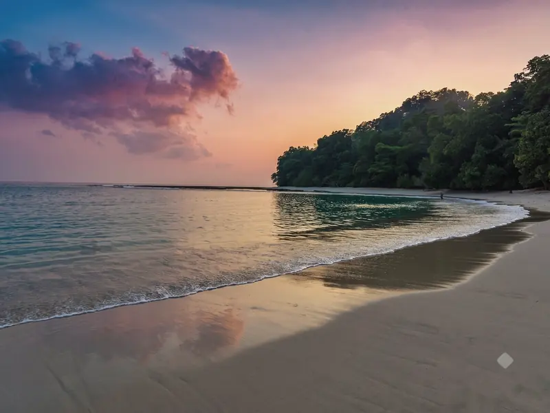
4.9Zubilant on Google
Andaman, Unhurried
6 nights Andaman Islands Gentle
Six nights across Port Blair, Havelock and Neil, Radhanagar at sunset, snorkelling taught gently, and the Cellular Jail's story told the way it deserves.
From ₹42,000per person*View journey →
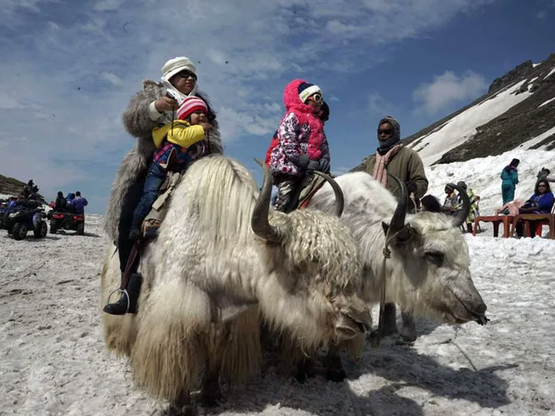
4.9Zubilant on Google
Himachal Classic: Shimla, Manali & the Old Hindustan Road
7 nights Himachal Pradesh Gentle
Seven nights from Shimla to Manali along the old Hindustan–Tibet road, timed for the two windows, May–June and October, when the hills are green, the passes are open, and the crowds are thinner than you think.
From ₹62,000per person*View journey →
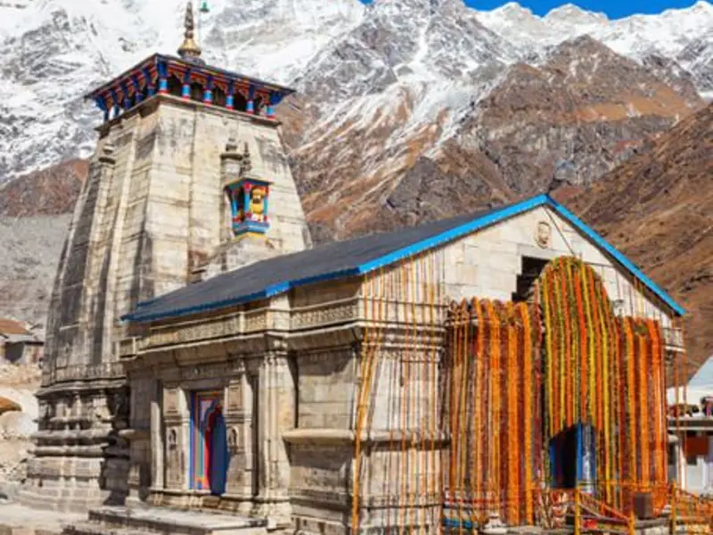
4.9Zubilant on Google
Uttarakhand: Char Dham by Road
10 nights Uttarakhand Moderate
Ten nights on the full Yamunotri–Gangotri–Kedarnath–Badrinath circuit by road, paced for pilgrims who want to complete the yatra properly, with a helicopter option for Kedarnath for those who should not attempt the climb.
From ₹1,05,000per person*View journey →
4.9Zubilant on Google
Ranthambore & the Wild East of Rajasthan
4 nights Rajasthan Gentle
Four nights at Ranthambore with three properly booked safaris in the October–April season, plus an unhurried Jaipur day on the way in, tigers first, forts second.
From ₹58,000per person*View journey →
4.9Zubilant on Google
Thar Under Canvas: Desert Rajasthan Glamping
4 nights Rajasthan Gentle
Four nights split between Jaisalmer's golden city and a luxury desert camp deep in the Thar, proper beds under canvas, dune sunsets without the day-tripper circus, November to February only.
From ₹65,000per person*View journey →
Trending 2026
4.9Zubilant on Google
Meghalaya: Living Root Bridges & the Wettest Place on Earth
6 nights Meghalaya Moderate
Six nights through Shillong, Cherrapunji, Mawlynnong and the crystal water at Dawki, including the descent to a living root bridge that is the whole point, in the clear October–April season.
From ₹72,000per person*View journey →
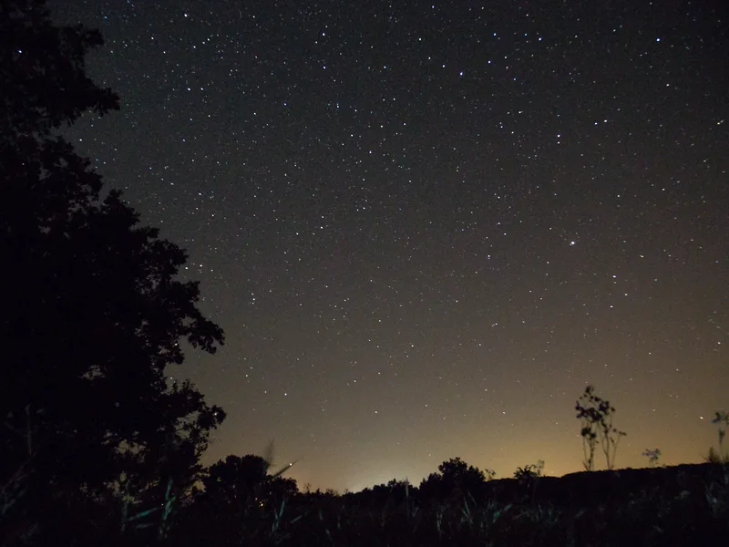
4.9Zubilant on Google
Rann of Kutch: The White Desert in Festival Season
5 nights Gujarat Gentle
Five nights from Bhuj to the white salt flats of Dhordo and the sea at Mandvi, timed for the Rann Utsav and the full-moon nights when the desert turns silver.
From ₹55,000per person*View journey →
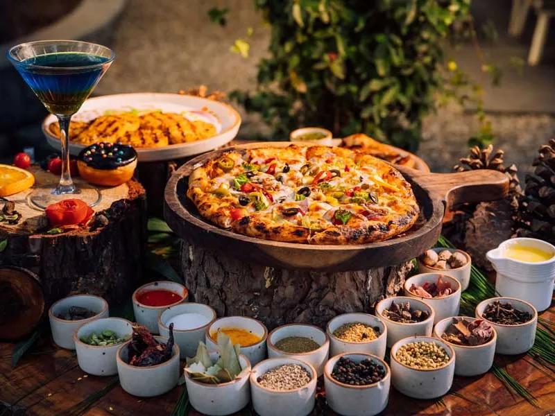
4.9Zubilant on Google
Amritsar & Punjab: Golden Temple, Border, Table
4 nights Punjab Gentle
Four nights in Amritsar built around the Golden Temple at its quietest hours, the Wagah border ceremony done properly, and the best eating city in North India taken seriously.
From ₹42,000per person*View journey →
4.9Zubilant on Google
Bandhavgarh & Kanha: Tiger Country Proper
6 nights Madhya Pradesh Gentle
Six nights and six safaris across Bandhavgarh and Kanha, the two parks where tiger sightings are earned by density, not luck, with naturalists who read the forest, not just the radio.
From ₹98,000per person*View journey →
4.9Zubilant on Google
Goa Beyond the Beach
5 nights Goa Gentle
Five nights of the Goa most visitors never find, the Latin quarter of Fontainhas, spice farms, ferry-only Divar island and the old churches, with beach afternoons kept sacred.
From ₹62,000per person*View journey →
4.9Zubilant on Google
Coorg & Mysuru: Coffee Country
5 nights Karnataka Gentle
Five nights from Mysuru's illuminated palace to the coffee estates of Coorg, with elephants at Dubare and mornings that smell of roasting beans.
From ₹56,000per person*View journey →
4.9Zubilant on Google
The Nilgiris by Toy Train: Ooty, Coonoor & the Blue Hills
5 nights Tamil Nadu Gentle
Five nights in the Nilgiris built around the UNESCO-listed mountain railway, ridden the right way, in the right direction, with tea gardens, colonial Ooty and quiet Coonoor.
From ₹58,000per person*View journey →
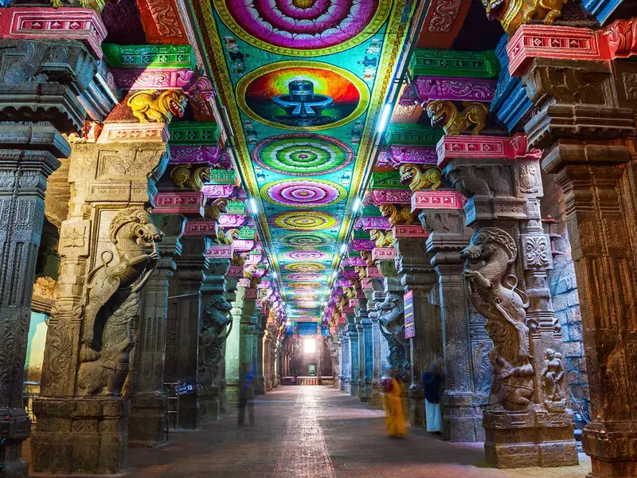
4.9Zubilant on Google
Madurai to Rameswaram: The Deep South Temple Road
6 nights Tamil Nadu Gentle
Six nights down the great temple road of the deep south, Madurai's Meenakshi at night, Chettinad's mansions and cuisine, Rameswaram's corridors, and land's end at Kanyakumari.
From ₹58,000per person*View journey →
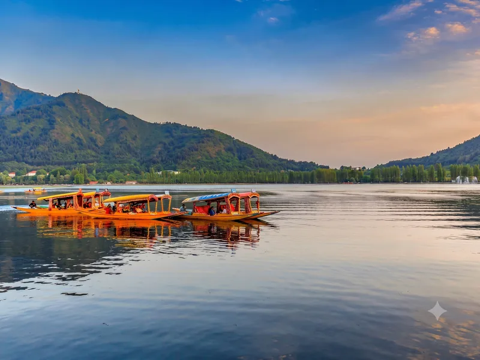
4.9Zubilant on Google
Gulmarg in Winter: India's Ski Story
5 nights Kashmir Moderate
Five nights in Gulmarg between January and March, built around a proper beginners' ski school, the family ski holiday that usually means Europe, at a fraction of the cost and eight time zones closer.
From ₹78,000per person*View journey →
Trending 2026
4.9Zubilant on Google
Japan in Cherry Blossom Season
8 nights Japan Moderate
Eight nights from Tokyo to Osaka by rail through Hakone and Kyoto, timed for the two weeks the blossom actually holds, with a November foliage departure for those who cannot get April leave.
From ₹2,60,000per person*View journey →
Trending 2026
4.9Zubilant on Google
Vietnam North to South
7 nights Vietnam Gentle to moderate
Seven nights down the length of Vietnam, Hanoi, an overnight cruise on Ha Long Bay, lantern-lit Hoi An and Ho Chi Minh City, on the easiest visa in Asia.
From ₹1,10,000per person*View journey →
Visa-free
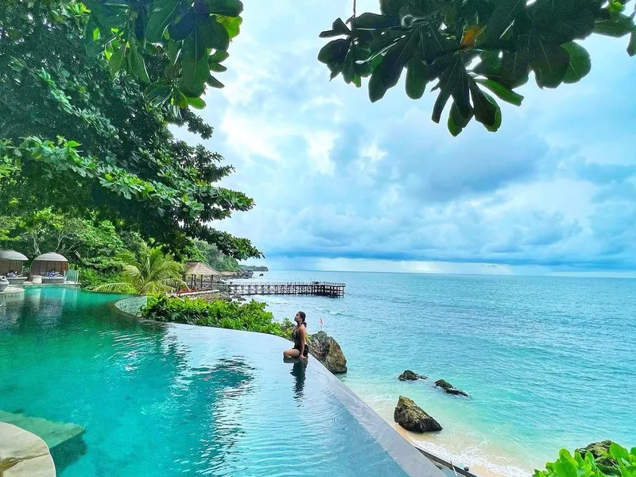
4.9Zubilant on Google
Bali Beyond the Pool Villa
6 nights Bali, Indonesia Gentle
Six nights across Ubud's rice terraces, the quiet Sidemen valley and the Uluwatu cliffs, the Bali underneath the Instagram version, on a visa stamped at the airport.
From ₹95,000per person*View journey →
Visa-free
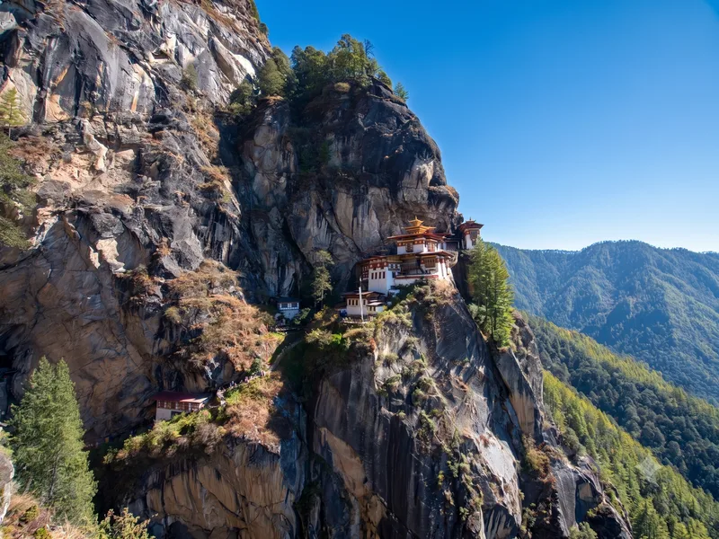
4.9Zubilant on Google
Bhutan: The Kingdom Next Door
6 nights Bhutan Moderate
Six nights through Thimphu, Punakha and Paro, ending with the climb to Tiger's Nest, the Himalayan kingdom Indians can enter without a visa, and mostly don't.
From ₹78,000per person*View journey →
Visa-free
4.9Zubilant on Google
Sri Lanka: The Full Island
7 nights Sri Lanka Gentle to moderate
Seven nights from Sigiriya's rock fortress through Kandy and the hill-country train to Ella, ending on the ramparts of Galle, the whole island, on a visa that costs Indians nothing.
From ₹85,000per person*View journey →
4.9Zubilant on Google
Dubai & Abu Dhabi Done Properly
5 nights UAE Gentle
Five nights across Dubai and Abu Dhabi that trade a third mall visit for the creek dhows, a desert evening, and the Louvre, the version of the Emirates worth flying for.
From ₹85,000per person*View journey →
Trending 2026
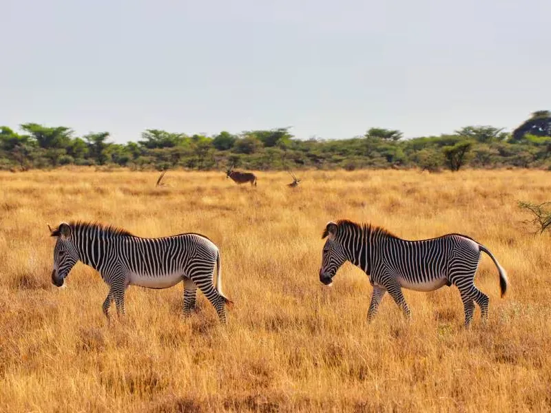
4.9Zubilant on Google
Kenya: The Masai Mara Migration
6 nights Kenya Gentle
Six nights from Nairobi deep into the Masai Mara for the July-to-October migration window, closing at Lake Naivasha, the once-in-a-lifetime trip, planned so it actually delivers once in a lifetime.
From ₹3,20,000per person*View journey →
Visa-free
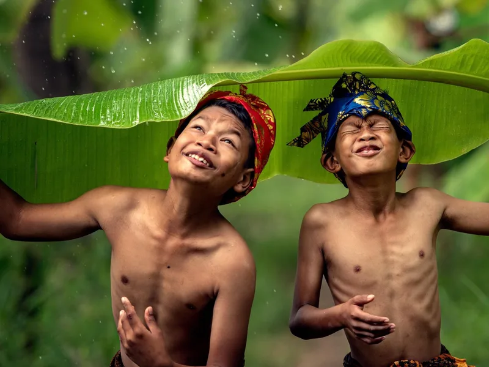
4.9Zubilant on Google
Thailand for Families: Bangkok, River Kwai & the Gulf
6 nights Thailand Gentle
Six nights across Bangkok, the River Kwai and a Gulf beach, the family Thailand of temples, floating markets and a train ride through history, timed for the cool season and with no visa to arrange at all.
From ₹75,000per person*View journey →
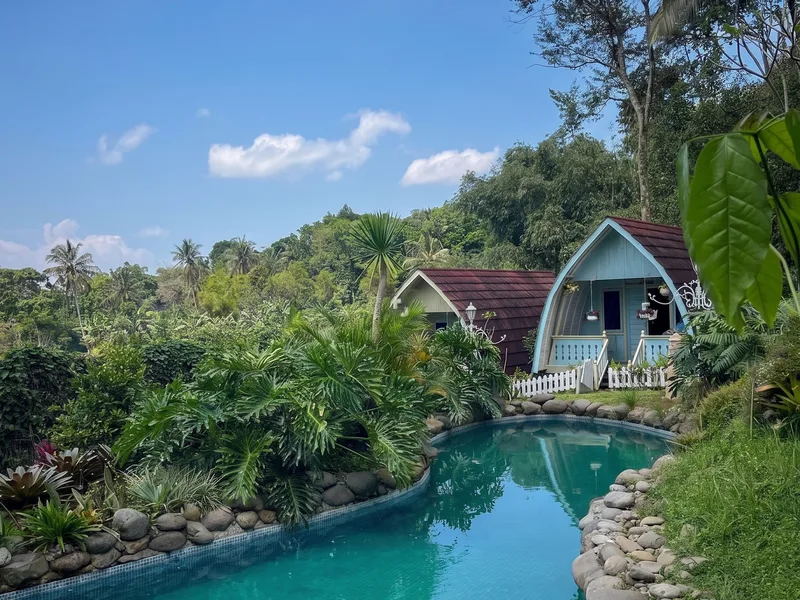
4.9Zubilant on Google
Singapore & Malaysia: The Easy First Passport Stamp
6 nights Singapore & Malaysia Gentle
Six nights across Singapore, Kuala Lumpur and the Genting highlands, the classic first international trip, engineered so that nobody in the family, from seven to seventy-seven, has a hard day.
From ₹1,05,000per person*View journey →
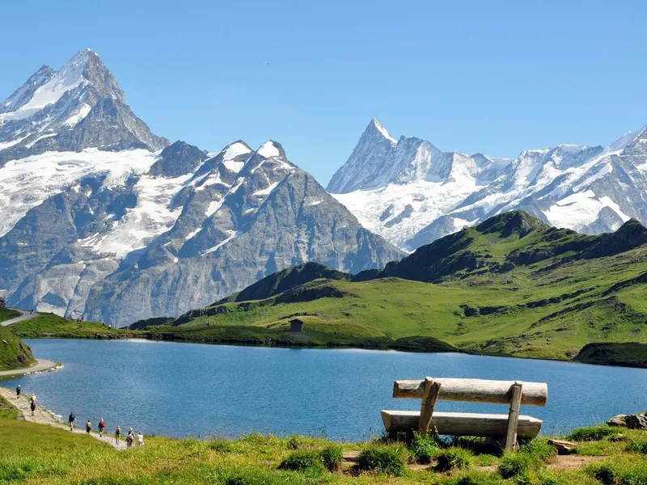
4.9Zubilant on Google
Switzerland & Paris: Europe for First-Timers
8 nights Switzerland & France Moderate
Eight nights from Interlaken to Lucerne to Paris by rail, the Jungfrau, the lakes and the Eiffel Tower without a single airport in between, on the trains the Swiss themselves use.
From ₹2,90,000per person*View journey →
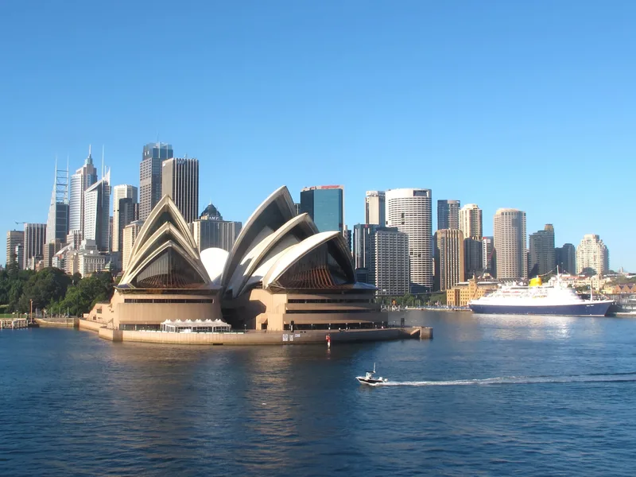
4.9Zubilant on Google
Australia & New Zealand: The Big Trip
12 nights Australia & New Zealand Moderate
Twelve nights from Sydney's harbour to the Great Barrier Reef to Queenstown and Milford Sound, the once-in-a-lifetime southern journey, done in their summer, at a pace that lets you actually be there.
From ₹4,50,000per person*View journey →
4.9Zubilant on Google
The Golden Triangle: Delhi, Agra & Jaipur
5 nights North India Gentle
Five nights across Delhi, Agra and Jaipur in the cool months, built around one thing most tours fumble: standing in front of the Taj Mahal at sunrise, before the day arrives.
From ₹55,000per person*View journey →
Visa-free
4.9Zubilant on Google
Phuket & Krabi: Thailand's Islands
6 nights Thailand Gentle
Six nights split between Phuket and Krabi with the islands done by early boat, Phang Nga Bay before the flotillas arrive, and afternoons left honestly free.
From ₹92,000per person*View journey →
4.9Zubilant on Google
Tirupati & Tirumala: Darshan Done Right
3 nights Andhra Pradesh Gentle
Three nights built around one thing: a managed, unhurried darshan at Tirumala, with Srikalahasti and Chandragiri Fort filling the days without crowding them.
From ₹32,000per person*View journey →
4.9Zubilant on Google
Jim Corbett & Nainital
4 nights Uttarakhand Gentle
Two nights in India's oldest national park with proper dawn safaris, then two nights in Nainital around the lake: the classic first wildlife trip for a family.
From ₹45,000per person*View journey →
4.9Zubilant on Google
Vaishno Devi: The Climb to the Shrine
3 nights Jammu & Kashmir Moderate
Three nights built around the 13-kilometre climb from Katra to the Vaishno Devi shrine, with every honest way up, foot, pony, palanquin or helicopter, named and arranged in advance.
From ₹28,000per person*View journey →
Nothing here matches all of that.
Drop one answer and see what is close, or tell us and we will shape it.
Prices are indicative, per person on twin sharing.
Land-only vs flights-included, and final 2026-27 rates, pending confirmation.
Pacing for grandparents. Food children will eat. Drive lengths capped and printed. The nearest hospital named on every journey. A Zubilant escort with the group throughout, so the plan bends instead of breaking.
Who this isn’t for
Families whose ideal holiday is nightlife, and anyone shopping purely on price: an itinerary that competes on price competes by removing the escort, the lift and the private vehicle.